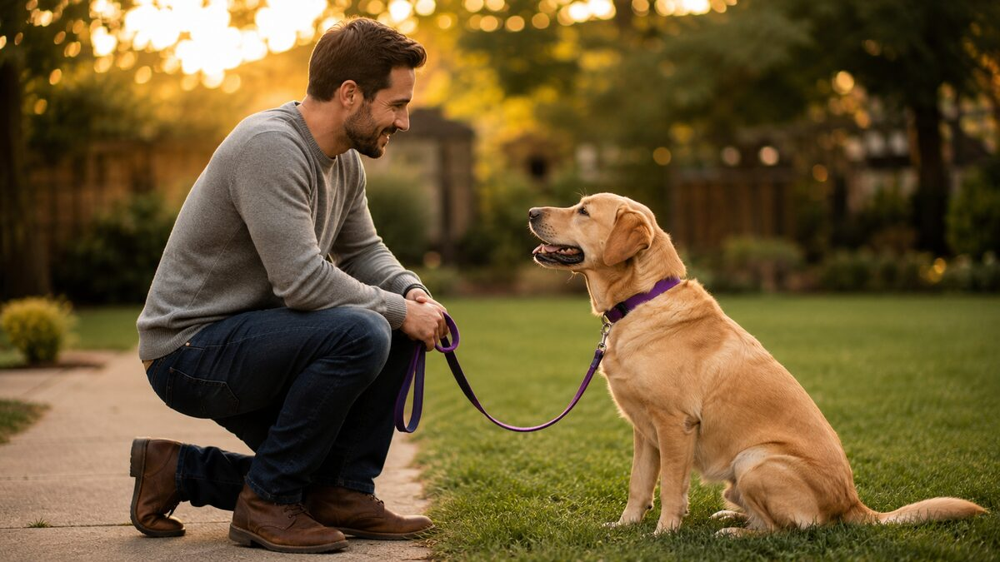
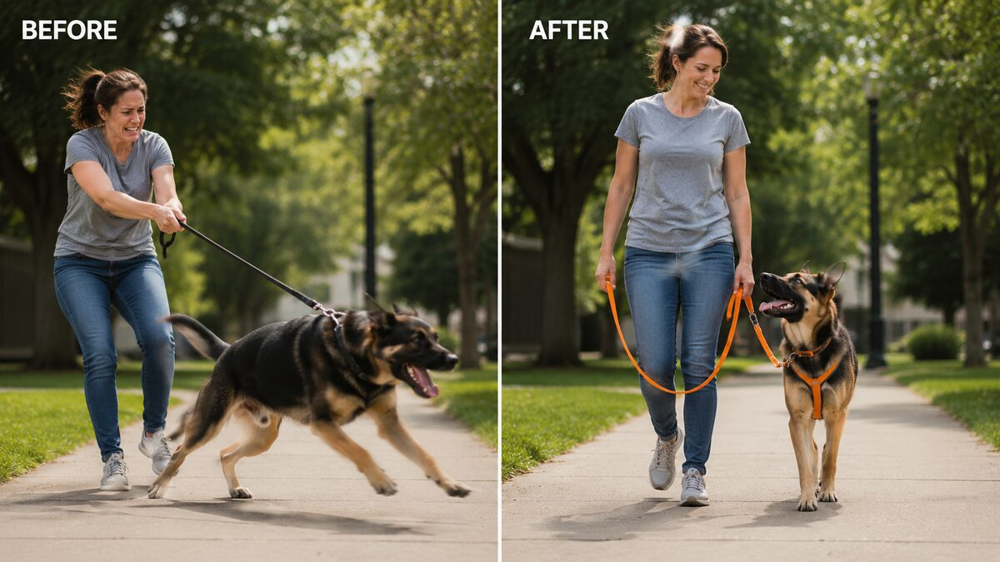

A free online workshop reveals the exact methods professional service-dog trainers use to fix the 11 most common behavior problems — potty accidents, leash pulling, jumping, barking, and more. Works for any breed, any age, even rescues.
Takes 2 minutes to register

20+ years training service dogs for people with physical and mental disabilities, including veterans with PTSD.
Host of Animal Planet's "Who Let The Dogs Out," judging some of the best-trained dogs in the U.S.

This is the kind of shift owners report after applying these methods — same dog, different leash experience.
"My beautiful Doberman Sophie was completely out of control... And she got it fast. Amazing results."
— Gina Meyer, Galveston, TX
"I rescued a 3.5 year old German Shepherd from the shelter... thanks to your workshop, he is now a lot calmer and friendlier."
— Matt Jenson, Rockford, IL
Join Dr. Alexa Diaz and Eric Presnall for free and learn the same secrets used to train real service dogs — no cost, no obligation.
Grab Your Free Seat Now →Seats are limited per session · Reserve yours now
This free workshop does not provide a legally certified service dog. It teaches the same training principles used by service-dog trainers, applied to help any dog become calmer, more obedient, and easier to live with. PuppyMatch Pro is an independent affiliate partner of K9 Training Institute and may be compensated for referrals at no extra cost to you.